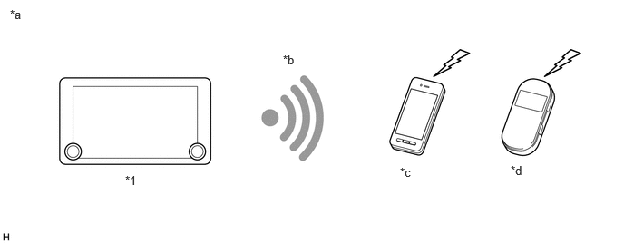

| Last Modified: 10-07-2025 | 6.11:8.1.0 | Doc ID: NM100000002GLBU |
| Model Year Start: 2024 | Model: Tacoma | Prod Date Range: [12/2023 - ] |
| Title: AUDIO / VIDEO: AUDIO AND VISUAL SYSTEM: WI-FI COMMUNICATION; 2024 - 2026 MY Tacoma Tacoma HV [12/2023 - ] | ||
WI-FI COMMUNICATION
FUNCTION
(a) "Wi-Fi" is a worldwide wireless communication standard widely used as a short range communication tool.
|
*1 |
Audio Head Unit (Radio and Display Receiver Assembly) |
- |
- |
|
*a |
The illustrations shown are examples only. The illustrations may differ from the actual audio head unit. |
*b |
"Wi-Fi" Wireless Connection |
|
*c |
Cellular Phone ("Wi-Fi" Compatible Type) |
*d |
Mobile Wi-Fi Router ("Wi-Fi" Compatible Type) |
(b) "Wi-Fi" is a registered trademark of "Wi-Fi" Alliance.
(c) The audio head unit uses the 2.4 GHz and 5.0 GHz frequency band for "Wi-Fi" communication.
HINT:
The communication performance of "Wi-Fi" may vary depending on obstructions or radio wave conditions between communication devices, electromagnetic radiation, communication device sensitivity or antenna capacity.
(d) "Wi-Fi" Communication
(1) A wireless LAN antenna is integrated into the audio head unit, enabling "Wi-Fi" communication to wireless clients (User's tethering-compatible cellular phone or mobile "Wi-Fi" router).
HINT:
- "Wi-Fi" communication may be unavailable depending the vehicle conditions, condition of the surroundings such as radio wave conditions around the audio head unit, the distance to the device or device conditions. In addition, during "Wi-Fi" communication, communication may be cut or become unstable due to the conditions described above.
- The connection history of the audio head unit and wireless clients are stored in the internal memory of the audio head unit. The stored data can be exported to a USB memory device as a connection history file, which can be checked using the Global TechStream (GTS).
(2) "Wi-Fi" has the functions shown in the table below.
|
Function |
Description |
|---|---|
|
Station Function |
Function that connects the audio head unit to an access point |
(e) "Wi-Fi" Hotspot
(1) Using the 2.4 GHz or 5.0 GHz band frequency wireless LAN built into the audio head unit, wireless clients (smartphone, tablet, laptop computer, etc.) can be connected to the access points of the "Wi-Fi" hotspot. The wireless clients connected via "Wi-Fi" to the audio head unit can access internet via the DCM.
HINT:
- This function is available only in the contiguous United States, Hawaii, Alaska, Canada and Puerto Rico.
- To use the "Wi-Fi" hotspot, it is necessary to enter a contract with a communication service provider.
- "Wi-Fi" hotspot may be unavailable depending the vehicle conditions, condition of the surroundings such as radio wave conditions around the head unit, the distance to the clients or clients conditions. In addition, during "Wi-Fi" communication, communication may be cut or become unstable due to the conditions described above.
- As the DCM cannot communicate outside of the cellular communication coverage area, the internet cannot be accessed.
- If the hands-free system, audio players or devices connected via 2.4 GHz band frequency Bluetooth are used at the same time as the "Wi-Fi" hotspot is being used, the data transmission speed may decrease.